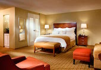

Mary Kate
- a n d -
Sunil
San Francisco
Our Story
In 2011, Ann (Mary Kate's sister) met Sunil at an event at the Computer History Museum, where Bobby (Ann's husband) and Sunil served on the NextGen Board. Ann bragged about her wonderful sister and then asked Sunil if he'd like to meet her. A few weeks later, Mary Kate and Sunil met on a blind date at Fraiche Frozen Yogurt with Ann and Bobby in tow. Undeterred by the awkwardness of the situation, Mary Kate and Sunil arranged to meet again a couple of weeks later. At that dinner, they talked until the restaurant closed and forgot to order any food, which is why they didn't realize until their third date that they were both vegetarian.
Fast forward to Honolulu in May 2014, where Sunil had planned a date night that incorporated a sunset walk around the Magic Lagoon near Waikiki Beach. Unbeknownst to Mary Kate, Sunil had a ring in his pocket and a photographer hidden in the bushes as they took their last few steps before Sunil got down on one knee. Taking Mary Kate's hand, he explained the reasons why they should spend their lives together and asked her to marry. It is with joyful hearts that we are inviting you to celebrate our love and hope you can join us.
The wedding will be held at
General's Residence
1 Fort Mason
San Francisco, CA 94123
on March 28, 2015
3:00pm - 11:00 pm
click for map
Events
-

Welcome Dinner
Friday 3/27 from 6:00 to 9:00pm
Firehouse 8, 1648 Pacific Avenue, San Francisco (map)
All wedding attendees are invited to join us for an optional welcome dinner in a restored firehouse in San Francisco, not too far from our recommended hotels and the main event. Dinner will be served throughout the evening to accommodate guests with late arrivals.
Dress: Casual American (jeans/t-shirts) or Casual Indian -
Wedding Ceremony, Cocktail Hour, and Reception
Saturday 3/28 from 3:00 to 11:00pm
General's Residence, 1 Fort Mason, San Francisco (map)We will be having a traditional Indian ceremony immediately followed by a cocktail reception, dinner, and dancing -- all at the same location. The groom's family and friends will begin the event with a lively procession to the General's Residence entryway. Sunil will be on a horse and we will have a dholi (traditional North Indian drummer) as we all dance to celebrate the beginning of the day's events. Our ceremony will be performed in Sanskrit with descriptions in English. At Indian weddings, guests do not have prescribed roles—no need to worry about what to do or when to sit, stand, or pray. During the rituals, quiet chatting among guests is completely acceptable so if you have questions, feel free to ask your neighbor. Changing seats, walking around, and enjoying treats are also common during Indian ceremonies. Plenty of free parking is available at Fort Mason near the General's Residence.
Dress: Formal Indian or Formal American (suits/dresses); please bring a jacket for outdoor cocktail hour.
Travel & Accomodations
-
Fly into SFO
San Francisco International Airport
We recommend you fly into San Francisco International Airport (SFO). From here you can take a 20-minute taxi ride to any of our recommended hotels below. Our wedding is planned so that you will not need a rental car to get around between our wedding events. Most locations are a 10-15 minute walk away and Uber (mobile app to call a taxi) is a reliable alternative.
-

San Francisco Marriott Fisherman's Wharf
1250 Columbus Ave, San Francisco, CA (map)
This hotel is a 15-minute uphill/downhill walk (1.0 miles) from the General's Residence. This hotel is in the center of the very popular Fisherman's Wharf area including ferries to Alcatraz, chocolate from Ghiradelli square, and more. We have negotiated a group rate of $159/night + tax for a Single or Double Room. It will be $199/night + tax for a room that accommodates 4 people. Parking is $50/night and internet is $12.95/day. Just call them at 800-228-9290 and mention that you are with the "Stimmler-Nagaraj wedding". To secure this discount, you must book by February 26, 2015. See more at the San Francisco Marriott Fisherman's Wharf website.
-
Comfort Inn By The Bay
2775 Van Ness Ave, San Francisco, CA (map)
This hotel is a 5-minute easy walk to the General's Residence (0.3 miles). We recommend asking for a higher floor to enjoy a spectacular view of the Golden Gate bridge. We have negotiated a group rate of $129/night + tax for a queen-sized bed. Breakfast and internet is included. Parking will be $26 + tax. Just mention that you are with the "Stimmler-Nagaraj wedding". See more at the Comfort Inn By The Bay's website.
-
Search on AirBnB
www.airbnb.com
AirBnb allows you to search for vacation rentals in the city which may be a great option for families and people traveling in groups. We have pre-filled the closest neighborhoods via this AirBnb link
RSVP
Please complete this form to RSVP for our wedding. We will not be sending paper invitations/RSVP notes. If you have any questions, please call us at 650-395-7774 or email us at sunil@sunilnagaraj.com or marykatestimmler@gmail.com